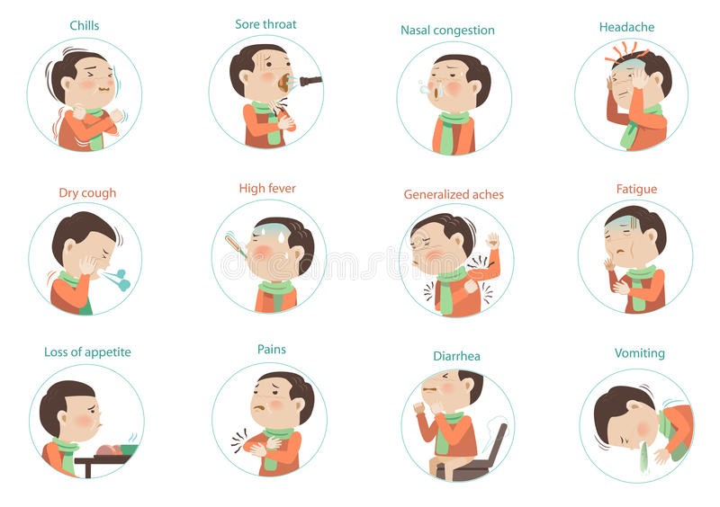

Symptoms for the flu may be fever, chills, muscle aches, cough, congestion, runny nose, headaches, and fatigue.

The flu is usually treatable with rest and fluid to give the body a chance to fight the infection for itself.
Symptoms can also be treated with over the counter medication.
But most importantly making sure you recieve the annual flu vaccine can help prevent or limit the symptoms for the flu. One of the best ways to prevent beig infected with the flu is by getting vaccinated anually.
To prevent being infected yourself and infecting others covering when your coughs or sneezes is important as well as washing your hands frequently throughout your day.
Staying home and avoiding contact with others is something to remember when you have the flu because this is one of the best ways to prevent spreading the infection.